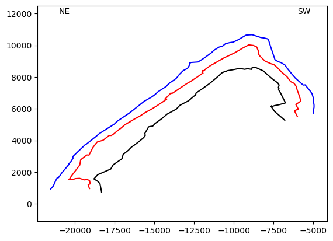
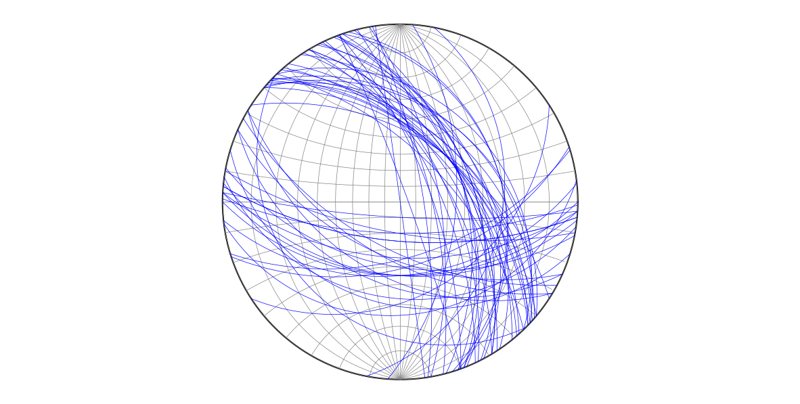
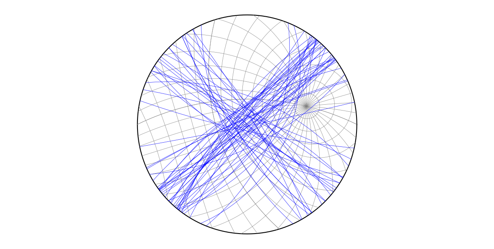

Many problems in geology, like in real life, are simpler when viewed from another perspective. For example, when studying the movement of continents through time because of plate tectonics (Figure 5.1a), two coordinate systems are required, one in a present-day geographic frame, and another one attached to the continent. Or to analyze a fault (Figure 5.1b), we need one coordinate system attached to the fault (with one axis parallel to the pole and another to the slickensides), which we may want to relate to the more familiar NED system. A change in coordinate system is called a coordinate transformation and this is an operation that happens everywhere. Computer games, flight simulators, and subsurface interpretation programs rely heavily on coordinate transformations.
Fig. 5.1 Examples of coordinate transformations in geology. a. Continental drift, b. A fault plane. Red is the local coordinate system for analysis (continent in a, fault in b), and gray/black is the geographic coordinate system. Modified from Allmendinger et al. (2012).#
A transformation involves a change in the origin and orientation of the coordinate system. We will refer to the new axes as the primed coordinate system, \(\mathbf{X\text{'}}\), and the old coordinate system as the unprimed system, \(\mathbf{X}\) (Figure 5.2a). Let’s assume the origin of the old and new coordinate systems is the same. The change in orientation of the new coordinate system is defined by the angles between the new coordinate axes and the old axes. These angles are marked systematically, the first subscript refers to the new coordinate axis and the second subscript to the old coordinate axis. For example, \(\theta_{23}\) is the angle between the \(\mathbf{X_2\text{'}}\) axis and the \(\mathbf{X_3}\) axis (Figure 5.2a).
Fig. 5.2 a. Rotation of a Cartesian coordinate system. The old axes are black, the new axes are primed and red. Only three of the nine possible angles are shown. b. Graphic device for remembering how the subscript of the direction cosines relate to the new and the old axes. Modified from Allmendinger et al. (2012).#
To define the transformation, we use the cosines of these angles rather than the angles themselves (Figure 5.2b). These are the direction cosines of the new axes with respect to the old axes. The subscript convention is exactly the same. For example, \(a_{23}\) is the direction cosine of the \(\mathbf{X_2\text{'}}\) axis with respect to the \(\mathbf{X_3}\) axis. There are nine direction cosines that form a 3 \(\times\) 3 array, where each row refers to a new axis and each column to an old axis (Figure 5.2b). This matrix a of direction cosines is known as the transformation matrix, and it is the key element that defines the transformation.
Fortunately, not all the nine direction cosines in the transformation matrix for Figure 5.2 are independent. Since the base vectors of the new coordinate system are unit vectors, their magnitude is 1:
Equations 5.1 and 5.2 are known as the orthogonality relations. Since we have nine unknowns (i.e. the nine direction cosines) and six equations, there are only three independent direction cosines in the transformation matrix. If we know three of the direction cosines defining the transformation, we can calculate the other six.
Once we know the transformation matrix a and the components of a vector in the old coordinate system, we can calculate the components of the vector in the new coordinate system. The equations are fairly simple:
where \(i\) is the free suffix, and \(j\) is the dummy suffix. Assuming that \(i\) and \(j\) are either 1, 2, or 3, Equation 5.4 represents three separate equations (the three indices of \(i\)), each one with three terms (the three indices of \(j\)). These equations are easy to implement in Python code:
You will see this code snippet repeatedly in the functions of this chapter. Linear algebra is elegant. To convert the vector from the new coordinate system back to the old coordinate system, you just need to do:
There is a simple coordinate transformation that nicely illustrates the theory above: the transformation from an ENU to a NED coordinate system (Figure 4.1). It is simple because the angles involved are either 0, 90, or 180. The direction cosines of the new axes (NED) with respect to the old axes (ENU), and the transformation matrix a is:
Notice that in this special case a is symmetric (\(a_{ij}=a_{ji}\)), so the elements of a are also the direction cosines of ENU with respect to NED. In the following sections, we will look at more complicated coordinate transformations, but the principles mentioned here will still apply.
The thickness of a tabular stratigraphic unit is the perpendicular distance between the parallel planes bounding the unit. This is also called the stratigraphic thickness (Ragan, 2009). A general problem though is that locations on the planes bounding the unit, are commonly given in a geographic (e.g. ENU) coordinate system. One therefore must use ortographic projections and trigonometry to determine the stratigraphic thickness of the unit from the locations (Ragan, 2009).
An easier approach is to use a transformation. Figure 5.3 illustrates the situation. Points on the top and base of the unit are given in an ENU coordinate system. We can transform these points into a coordinate system attached to the bedding planes, where the strike (RHR) of the planes is the first axis, the dip the second axis, and the pole to the planes the third axis. We will call this coordinate system the SDP system. The thickness of the unit is just the difference between the P coordinates of any point on the top and any point on the base of the unit.
Fig. 5.3 Coordinate transformation from an ENU to a Strike-Dip-Pole (SDP) coordinate system. The thickness of the unit can be calculated by subtracting the P coordinates of any point on the top and any point on the base. Modified from Allmendinger (2020a).#
We can find the elements of the matrix a for this transformation using trigonometry. However, we will follow a more didactic approach. We will reference the two ENU and SDP coordinate systems with respect to the NED coordinate system, and then use the dot product to determine the direction cosines of SDP into ENU.
The direction cosines of the ENU coordinate system with respect to the NED coordinate system are given by Eq. (5.7). The direction cosines of the SDP coordinate system with respect to the NED coordinate system can be found using Table 4.1:
The transformation matrix a from the ENU to the SDP coordinate system has as components the direction cosines of the new SDP axes into the old ENU axes. From Eq. (4.9), one can see that these are just the dot product between the new and old axes:
So if point 1 is at the top of the unit and has coordinates \([E_1,N_1,U_1]\), and point 2 is at the base of the unit and has coordinates \([E_2,N_2,U_2]\), the P coordinates of these points are:
The function true_thickness calculates the thickness of a unit given the strike and dip of the unit, and the ENU coordinates of two top and base points:
importnumpyasnpdeftrue_thickness(strike,dip,top,base):""" true_thickness calculates the thickness (t) of a unit given the strike (strike) and dip (dip) of the unit, and points at its top (top) and base (base) top and base are 1 x 3 arrays defining the location of top and base points in an ENU coordinate system. For each one of these arrays, the first, second and third entries are the E, N and U coordinates NOTE: strike and dip should be input in radians """# make the transformation matrix a # from ENU coordinates to SDP coordinatessin_str=np.sin(strike)cos_str=np.cos(strike)sin_dip=np.sin(dip)cos_dip=np.cos(dip)a=np.array([[sin_str,cos_str,0],[cos_str*cos_dip,-sin_str*cos_dip,-sin_dip],[-cos_str*sin_dip,sin_str*sin_dip,-cos_dip]])# transform the top and base points# from ENU to SDP coordinatestopn=np.zeros(3)basen=np.zeros(3)foriinrange(0,3):forjinrange(0,3):topn[i]=a[i,j]*top[j]+topn[i]basen[i]=a[i,j]*base[j]+basen[i]# compute the thickness of the unitt=np.abs(basen[2]-topn[2])returnt
Let’s use this function to determine the thickness of the sedimentary units T to Q in the geologic map of Figure 5.4. This time we have points at the top and base of these units, and their ENU coordinates are:
Fig. 5.4 Geologic map of sedimentary units with an orientation 84.5/22.5 (RHR) (Bennison et al., 2011). Points at the top and base of units T to Q are used to determine the thickness of the units.#
point1 = [1147, 3329, 400]
point2 = [1323, 2362, 500]
point3 = [1105, 1850, 400]
point4 = [1768, 940, 300]
point5 = [1842, 191, 200]
The notebook ch5-1 shows the solution to this problem:
importnumpyasnppi=np.pifromcompgeo.true_thicknessimporttrue_thickness# Strike and dip of the unit in radiansstrike,dip=np.radians([84.5,22.5])# ENU coordinates of the pointsp1=np.array([1147,3329,400])p2=np.array([1323,2362,500])p3=np.array([1105,1850,400])p4=np.array([1768,940,300])p5=np.array([1842,191,200])# Compute the thickness of the unitsthickT=true_thickness(strike,dip,p2,p1)thickS=true_thickness(strike,dip,p3,p2)thickR=true_thickness(strike,dip,p4,p3)thickQ=true_thickness(strike,dip,p5,p4)print("Thickness of unit T = {:.1f} m".format(thickT))print("Thickness of unit S = {:.1f} m".format(thickS))print("Thickness of unit R = {:.1f} m".format(thickR))print("Thickness of unit Q = {:.1f} m".format(thickQ))
Thickness of unit T = 467.2 m
Thickness of unit S = 94.6 m
Thickness of unit R = 278.6 m
Thickness of unit Q = 195.6 m
What about if there are uncertainties in the strike and dip of the unit, and in the coordinates of the top and base points? The function true_thickness_u in the resource git repository handles this case. Suppose that in the problem above, the uncertainties in strike and dip are 4and 2respectively, the uncertainty in east and north coordinates is 10 m, and in elevation is 5 m. The notebook ch5-2 shows the solution to this problem:
# Import librariesimportnumpyasnppi=np.pifromuncertaintiesimportufloatfromcompgeo.true_thickness_uimporttrue_thickness_u# Strike and dip of the unit in radiansstrike,dip=np.radians([84.5,22.5])# Strike and dip errors in radiansustrike,udip=np.radians([4,2])# Create the strike and dip with uncertaintiesstrike=ufloat(strike,ustrike)dip=ufloat(dip,udip)# ENU coordinates of the points# with uncertainties in E-N = 10, and U = 5p1=np.array([ufloat(1147,10),ufloat(3329,10),ufloat(400,5)])p2=np.array([ufloat(1323,10),ufloat(2362,10),ufloat(500,5)])p3=np.array([ufloat(1105,10),ufloat(1850,10),ufloat(400,5)])p4=np.array([ufloat(1768,10),ufloat(940,10),ufloat(300,5)])p5=np.array([ufloat(1842,10),ufloat(191,10),ufloat(200,5)])# Compute the thickness of the unitsthickT=true_thickness_u(strike,dip,p2,p1)thickS=true_thickness_u(strike,dip,p3,p2)thickR=true_thickness_u(strike,dip,p4,p3)thickQ=true_thickness_u(strike,dip,p5,p4)print("Thickness of unit T = {:.1f} m".format(thickT))print("Thickness of unit S = {:.1f} m".format(thickS))print("Thickness of unit R = {:.1f} m".format(thickR))print("Thickness of unit Q = {:.1f} m".format(thickQ))
Thickness of unit T = 467.2+/-31.5 m
Thickness of unit S = 94.6+/-20.4 m
Thickness of unit R = 278.6+/-37.0 m
Thickness of unit Q = 195.6+/-27.0 m
For the thinnest unit S, the uncertainty in thickness is about 20% the thickness of the unit!
The ENU to SDP transformation is useful to solve another interesting problem, namely the outcrop trace of a plane on irregular terrain (Figure 3.9; Allmendinger, 2020b). If we know the orientation of the plane (strike and dip), the ENU coordinates of a location where the plane outcrops, and the topography of the terrain as a digital elevation model (DEM), we can determine the outcrop trace of the plane using computation. The solution is surprisingly simple, the plane outcrops wherever the P coordinate of the terrain is equal to the P coordinate of the plane’s outcrop location.
Note
DEM is a grid of regularly spaced points in east and north and with elevation at each point.
Let’s call the P coordinate of the plane’s outcrop location \(P_1\), and the P coordinate of a point in the DEM grid \(P_{gp}\). The difference between these two is:
At each point in the DEM grid, we can calculate and store this difference. The plane will outcrop wherever \(D\) is zero. Therefore, to draw the outcrop trace, we just need to contour the \(D\) value of zero on the grid. The function outcrop_trace computes the value of \(D\) on a DEM grid of regularly spaced points defined by E (\(\mathbf{XG}\)), N (\(\mathbf{YG}\)) and U (\(\mathbf{ZG}\)) coordinates. Notice that these arrays must follow the format given by the NumPy meshgrid function:
importnumpyasnpdefoutcrop_trace(strike,dip,p1,XG,YG,ZG):""" outcrop_trace estimates the outcrop trace of a plane, given the strike (strike) and dip (dip) of the plane, the ENU coordinates of a point (p1) where the plane outcrops, and a DEM of the terrain as a regular grid of points with E (XG), N (YG) and U (ZG) coordinates. After using this function, to draw the outcrop trace of the plane, you just need to draw the contour 0 on the grid XG,YG,DG NOTE: strike and dip should be input in radians p1 must be an array XG and YG arrays should be constructed using the numpy function meshgrid """# make the transformation matrix from ENU coordinates to# SDP coordinates. We just need the third row of this# matrixa=np.zeros((3,3))a[2,0]=-np.cos(strike)*np.sin(dip)a[2,1]=np.sin(strike)*np.sin(dip)a[2,2]=-np.cos(dip);# Initialize DGn,m=XG.shapeDG=np.zeros((n,m))# Estimate the P coordinate of the outcrop point p1P1=a[2,0]*p1[0]+a[2,1]*p1[1]+a[2,2]*p1[2]# Estimate the P coordinate at each point of the DEM# grid and subtract P1foriinrange(0,n):forjinrange(0,m):DG[i,j]=P1-(a[2,0]*XG[i,j]+a[2,1]*YG[i,j]+a[2,2]*ZG[i,j])returnDG
Let’s apply this function to the map of Figure 5.5. On the western half of this map, the contact between units B and C outcrops at point 1 and has an orientation 020/22 (RHR). On the eastern half of the map, the same contact outcrops at point 2 and has an orientation 160/22 (RHR). The notebook ch5-3 draws the outcrop trace of the contact. Notice that the ENU coordinates of the points of the DEM grid are input from the text files XG, YG, and ZG.
Fig. 5.5 The contact between units B and C outcrops at point 1 with orientation 020/22 (RHR), and at point 2 with orientation 160/22 (RHR). From this information and a DEM of the terrain, we can determine the outcrop trace of the contact.#
# Import librariesimportosimportnumpyasnpimportmatplotlib.pyplotaspltfromcompgeo.outcrop_traceimportoutcrop_trace# Read the DEM gridXG=np.loadtxt(os.path.abspath("data/ch5-3/XG.txt"))YG=np.loadtxt(os.path.abspath("data/ch5-3/YG.txt"))ZG=np.loadtxt(os.path.abspath("data/ch5-3/ZG.txt"))# Make a figurefig,ax=plt.subplots()# Contour the terraincval=np.linspace(200,700,6)cp=ax.contour(XG,YG,ZG,cval)ax.clabel(cp,inline=True,fontsize=10,fmt="%d")# Western contactpi=np.pistrike,dip=np.radians([20,22])point1=np.array([692,1212,600])DG=outcrop_trace(strike,dip,point1,XG,YG,ZG)cval=0# Contour only CG zero valuecp=ax.contour(XG,YG,DG,cval,colors="red",linewidths=3)ax.plot(point1[0],point1[1],"bo",markersize=10)# Eastern contactstrike,dip=np.radians([160,22])point2=np.array([3203,1031,200])DG=outcrop_trace(strike,dip,point2,XG,YG,ZG)cp=ax.contour(XG,YG,DG,cval,colors="red",linewidths=3)ax.plot(point2[0],point2[1],"bo",markersize=10)# Make axes equalax.axis("equal")plt.show()
Folded rock layers normally have a cylindrical symmetry; the layers are bent about a single axis or direction, called the fold axis. In a cylindrical fold, the fold axis is a line of minimum, zero curvature, and the lines of maximum, non-zero curvature are perpendicular to it (Suppe, 1985). The least distorted view of such structure is on the plane perpendicular to the fold axis, which is called the profile plane (Figure 5.6). Projecting the fold data to this profile plane is called a down-plunge projection.
Constructing a down-plunge projection by hand typically involves an orthographic projection, and this problem is complicated (and tedious), particularly if points on the fold are not at the same elevation. Fortunately, we can solve this problem as a coordinate transformation, where points on the fold referenced in a ENU coordinate system, are transformed to a new \(\mathbf{X_1\text{'}}\mathbf{X_2\text{'}}\mathbf{X_3\text{'}}\) coordinate system, with \(\mathbf{X_3\text{'}}\) parallel to the fold axis, and \(\mathbf{X_1\text{'}}\mathbf{X_2\text{'}}\) defining the profile plane (Figure 5.6).
We will again derive the matrix a for this transformation using linear algebra. The direction cosines of the ENU coordinate system with respect to the NED coordinate system are given by Eq. (5.7). The direction cosines of the \(\mathbf{X_1\text{'}}\mathbf{X_2\text{'}}\mathbf{X_3\text{'}}\) coordinate system with respect to the NED coordinate system can be found using Table 4.1. If the trend and plunge of the fold axis are \(T\) and \(P\), these direction cosines are (Figure 5.6):
The direction cosines of the new \(\mathbf{X_1\text{'}}\mathbf{X_2\text{'}}\mathbf{X_3\text{'}}\) axes into the old ENU axes are the dot product between the new and old axes:
This is the transformation matrix a for the down-plunge projection. To project \(i\)-th points on the fold with coordinates \([E_i,N_i,U_i]\), we just need to do the following:
and then plot \(X_{2i}'\) against \(X_{1i}'\) (Figure 5.6) to draw the fold.
The function down_plunge computes the down-plunge projection of a bed from the ENU coordinates of points on the bed, and the fold axis orientation:
importnumpyasnpdefdown_plunge(bs,trd,plg):""" down_plunge constructs the down plunge projection of a bed bs is a npoints x 3 array, which holds npoints on the digitized bed, each point defined by 3 coordinates: X1 = East, X2 = North, X3 = Up trd and plg are the trend and plunge of the fold axis and they should be entered in radians dpbs are the bed's transformed coordinates Python function translated from the Matlab function DownPlunge in Allmendinger et al. (2012) """# Number of points in bednvtex=bs.shape[0]# Allocate some arraysa=np.zeros((3,3))dpbs=np.zeros((np.shape(bs)))# Calculate the transformation matrix a(i,j)a[0,0]=np.sin(trd)*np.sin(plg)a[0,1]=np.cos(trd)*np.sin(plg)a[0,2]=np.cos(plg)a[1,0]=np.cos(trd)a[1,1]=-np.sin(trd)a[2,0]=np.sin(trd)*np.cos(plg)a[2,1]=np.cos(trd)*np.cos(plg)a[2,2]=-np.sin(plg)# Perform transformationfornvinrange(0,nvtex):foriinrange(0,3):dpbs[nv,i]=0.0forjinrange(0,3):dpbs[nv,i]=a[i,j]*bs[nv,j]+dpbs[nv,i]returndpbs
Let’s use this function to draw the down-plunge projection of the Big Elk anticline, southeastern Idaho, USA (Figure 5.7; Albee and Cullins, 1975). Text files contain the digitized contacts (ENU) of three tops along the fold: the Jurassic Twin Creek Limestone (jtc.txt), the Jurassic Stump Sandstone (js.txt), and the Cretaceous Peterson Limestone (kp.txt). The trend and plunge of the folds axis is 125/26 (in the next chapter we will see how to compute this axis). The notebook ch5-4 shows the solution to this problem:
Fig. 5.7 Simplified geologic map of the Big Elk anticline in southeastern Idaho. Modified from Allmendinger et al. (2012).#
# Import librariesimportosimportnumpyasnpimportmatplotlib.pyplotaspltfromcompgeo.down_plungeimportdown_plunge# Trend and plunge of the fold axis in radianstrend,plunge=np.radians([125,26])# Read the tops from the text filesjtc=np.loadtxt(os.path.abspath("data/ch5-4/jtc.txt"))js=np.loadtxt(os.path.abspath("data/ch5-4/js.txt"))kp=np.loadtxt(os.path.abspath("data/ch5-4/kp.txt"))# Transform the pointsjtcdp=down_plunge(jtc,trend,plunge)jsdp=down_plunge(js,trend,plunge)kpdp=down_plunge(kp,trend,plunge)# Make a figurefig,ax=plt.subplots()# Plot the down plunge sectionax.plot(jtcdp[:,1],jtcdp[:,0],"k-")ax.plot(jsdp[:,1],jsdp[:,0],"r-")ax.plot(kpdp[:,1],kpdp[:,0],"b-")# Display the section"s orientation# Notice that the fold axis plunges SE# Therefore the left side of the section is NE# and the right side is SWax.text(-2.1e4,12e3,"NE")ax.text(-0.6e4,12e3,"SW")# Make axes equalax.axis("equal")plt.show()

The thrust verges to the NE (Figure 5.7), yet the fold verges in the opposite direction to the SW. Unit Jp, between Jtc and Js, contains evaporites. Could this explain the observed fold geometry?
Rotations are essential in geology. For example, if from a current lineation on a tilted bed we want to estimate the direction of the current that deposited the bed, we need to rotate the bed (and the lineation) back to their pre-tilting orientation. The stereonet is a convenient device to rotate lines and planes around a horizontal axis or a vertical axis, but it is rather difficult to make rotations around an axis of a different orientation (Marshak and Mitra, 1988).
A rotation is also a coordinate transformation from an old coordinate system \(\mathbf{X_1}\mathbf{X_2}\mathbf{X_3}\) to a new coordinate system \(\mathbf{X_1\text{'}}\mathbf{X_2\text{'}}\mathbf{X_3\text{'}}\) (Figure 5.8). The rotation axis is specified by its trend and plunge, and the magnitude of rotation is given by the angle \(\omega\) which is positive for clockwise rotation and vice versa (Figure 5.8). The difficult part is that the rotation axis may not coincide with the axes of either the old or the new coordinate system (unlike the down-plunge projection).
The components of the transformation matrix a defining the rotation, which are the direction cosines of the new coordinate system \(\mathbf{X_1\text{'}}\mathbf{X_2\text{'}}\mathbf{X_3\text{'}}\) with respect to the old coordinate system \(\mathbf{X_1}\mathbf{X_2}\mathbf{X_3}\), can be found using spherical trigonometry (Allmendinger et al., 2012) or linear algebra as we did before. Here, we give them without proof. If \(\cos\alpha\), \(\cos\beta\) and \(\cos\gamma\) are the direction cosines of the rotation axis in the NED coordinate system (Table 4.1), and \(\omega\) is the amount of rotation, the elements of matrix a are:
The function rotate rotates a line (trd and plg) about a rotation axis (rtrd and rplg), an amount \(\omega\) (rot):
importnumpyasnpfromcompgeo.sph_to_cartimportsph_to_cartfromcompgeo.cart_to_sphimportcart_to_sphdefrotate(rtrd,rplg,rot,trd,plg,ans0):""" rotate rotates a line by performing a coordinate transformation rtrd = trend of rotation axis rplg = plunge of rotation axis rot = magnitude of rotation trd = trend of the line to be rotated plg = plunge of the line to be rotated ans0 = A character indicating whether the line to be rotated is an axis (ans0 = "a") or a vector (ans0 = "v") trdr and plgr are the trend and plunge of the rotated line NOTE: All angles are in radians Python function translated from the Matlab function Rotate in Allmendinger et al. (2012) """# Allocate some arraysa=np.zeros((3,3))#Transformation matrixraxis=np.zeros(3)#Dir. cosines of rotation axisline=np.zeros(3)#Dir. cosines of line to be rotatedliner=np.zeros(3)#Dir. cosines of rotated line# Convert rotation axis to direction cosinesraxis[0],raxis[1],raxis[2]=sph_to_cart(rtrd,rplg)# Calculate the transformation matrix a for the rotationx=1.0-np.cos(rot)sinrot=np.sin(rot)cosrot=np.cos(rot)a[0,0]=cosrot+raxis[0]*raxis[0]*xa[0,1]=-raxis[2]*sinrot+raxis[0]*raxis[1]*xa[0,2]=raxis[1]*sinrot+raxis[0]*raxis[2]*xa[1,0]=raxis[2]*sinrot+raxis[1]*raxis[0]*xa[1,1]=cosrot+raxis[1]*raxis[1]*xa[1,2]=-raxis[0]*sinrot+raxis[1]*raxis[2]*xa[2,0]=-raxis[1]*sinrot+raxis[2]*raxis[0]*xa[2,1]=raxis[0]*sinrot+raxis[2]*raxis[1]*xa[2,2]=cosrot+raxis[2]*raxis[2]*x# Convert trend and plunge of line to be rotated into# direction cosinesline[0],line[1],line[2]=sph_to_cart(trd,plg)# Perform the coordinate transformationforiinrange(3):forjinrange(3):liner[i]=a[i,j]*line[j]+liner[i]# Convert to lower hemisphere projection if axis ifliner[2]<0.0andans0=='a':liner*=-1.0# Convert from direction cosines back to trend and plungetrdr,plgr=cart_to_sph(liner[0],liner[1],liner[2])returntrdr,plgr
The notebook ch5-5 illustrates the use of the function rotate to solve the following problem from Leyshon and Lisle (1996): An overturned bed oriented 305/60 (RHR) has sedimentary lineations which indicate the palaeocurrent direction. These pitch at 60NW, with the current flowing up the plunge. Calculate the original trend of the palaeocurrents.
Besides rotating the lineations back to their pre-tilted orientation, there is an additional challenge in this problem. We need to figure out the orientation of the lineations from their pitch on the bed. We will do this as well using a rotation.
importnumpyasnppi=np.pifromcompgeo.poleimportpole_from_planefromcompgeo.rotateimportrotatefromcompgeo.zero_twopiimportzero_twopi# Strike and dip of bed in radiansstrike,dip=np.radians([305,60])# Pole of bedrtrd,rplg=pole_from_plane(strike,dip)# To find the orientation of the lineations# rotate the strike line clockwise about the # pole an amount equal to the pitch# strike linetrd,plg=strike,0# rotation = pitch in radiansrot=60*pi/180# orientation of lineationstrdr,plgr=rotate(rtrd,rplg,rot,trd,plg,"a")# Now we need to rotate the lineations about# the strike line to their pre-tilted orientation# The bed is overturned, so it has been rotated # pass the vertical. The amount of rotation# required to restore the bed to its pre-tilted# orientation is 180- 60 = 120 deg, and it# should be clockwiserot=120*pi/180# rotation in radians# rotate lineations to their pre-tilted orientationtrdl,plgl=rotate(trd,plg,rot,trdr,plgr,"a")# The current flows up the plunge, # so the trend of the paleocurrents is:trdl=zero_twopi(trdl+pi)print("Original trend of the paleocurrents = {:.1f}".format(trdl*180/pi))
Original trend of the paleocurrents = 65.0
5.2.5. Plotting great and small circles using rotations#
The transformation matrix a that describes the rotation (Eq. (5.21)), provides a simple and elegant way to draw great and small circles on a stereonet. As you may suspect from the previous notebook, to draw a great circle, we just need to rotate the strike line of the plane around the pole to the plane in fixed increments (e.g. 1) until completing 180. This is the same as drawing lines on the plane of incrementally larger rake from 0 to 180. To draw a small circle, we just need to rotate a line around the axis of the conic section in fixed increments (e.g. 1) until completing 360. Any line making an angle less than 90with the axis of rotation will trace a cone, which will plot on the stereonet as a small circle. The functions great_circle and small_circle return the path of a great or small circle on an equal angle or equal area stereonet:
importnumpyasnpfromcompgeo.poleimportpole_from_planefromcompgeo.rotateimportrotatefromcompgeo.st_coord_lineimportst_coord_linedefgreat_circle(strike,dip,stype):""" great_circle computes the great circle path of a plane in an equal angle or equal area stereonet of unit radius strike = strike of plane dip = dip of plane stype = Stereonet type: 0 = equal angle, 1 = equal area path = x and y coordinates of points in great circle path NOTE: strike and dip should be entered in radians. Python function translated from the Matlab function great_circle in Allmendinger et al. (2012) """pi=np.pi# Compute the pole to the plane. This will be the axis of# rotation to make the great circletrda,plga=pole_from_plane(strike,dip)# Now pick the strike line at the intersection of the# great circle with the primitive of the stereonettrd,plg=strike,0.0# To make the great circle, rotate the line 180 degrees# in increments of 1 degreerot=np.radians(np.arange(0,181,1))path=np.zeros((rot.shape[0],2))foriinrange(rot.size):# Avoid joining ends of pathifrot[i]==pi:rot[i]=rot[i]*0.9999# Rotate linertrd,rplg=rotate(trda,plga,rot[i],trd,plg,"a")# Calculate stereonet coordinates of rotated line# and add to great circle pathpath[i,0],path[i,1]=st_coord_line(rtrd,rplg,stype)returnpath
importnumpyasnpfromcompgeo.rotateimportrotatefromcompgeo.st_coord_lineimportst_coord_linefromcompgeo.zero_twopiimportzero_twopidefsmall_circle(trda,plga,cangle,stype):""" small_circle computes the paths of a small circle defined by its axis and cone angle, for an equal angle or equal area stereonet of unit radius trda = trend of axis plga = plunge of axis cangle = cone angle stype = Stereonet type: 0 = equal angle, 1 = equal area path1 and path2 = vectors with the x and y coordinates of the points in the small circle paths np1 and np2 = Number of points in path1 and path2 NOTE: All angles should be in radians Python function translated from the Matlab function SmallCircle in Allmendinger et al. (2012) """pi=np.pi# Find where to start the small circleif(plga-cangle)>=0.0:trd=trdaplg=plga-cangleelse:ifplga==pi/2.0:plga=plga*0.9999angle=np.arccos(np.cos(cangle)/np.cos(plga))trd=zero_twopi(trda+angle)plg=0.0# To make the small circle, rotate the starting line# 360 degrees in increments of 1 degreerot=np.radians(np.arange(0,361,1))path1=np.zeros((rot.shape[0],2))path2=np.zeros((rot.shape[0],2))np1=np2=0foriinrange(rot.size):# Rotate line: The line is considered as a vectorrtrd,rplg=rotate(trda,plga,rot[i],trd,plg,"v")# Calculate stereonet coordinates and add to path# If rotated plunge is positive add to 1st pathifrplg>=0.0:path1[np1,0],path1[np1,1]=st_coord_line(rtrd,rplg,stype)np1+=1# Else add to 2nd pathelse:path2[np2,0],path2[np2,1]=st_coord_line(rtrd,rplg,stype)np2+=1returnpath1,path2,np1,np2
Normally, stereonets are displayed looking straight down, with the primitive equal to the horizontal. However, sometimes it is convenient to look at the stereonet in another orientation. For example, one may want to plot data in the plane of a cross section with the view direction perpendicular to the section, or in a down-plunge projection with the view direction parallel to the fold axis. The function geogr_to_view enables to plot great and small circles on a stereonet of any view direction, by transforming the poles of rotation from NED coordinates to the view direction coordinates:
importnumpyasnpfromcompgeo.sph_to_cartimportsph_to_cartfromcompgeo.cart_to_sphimportcart_to_sphfromcompgeo.zero_twopiimportzero_twopidefgeogr_to_view(trd,plg,trdv,plgv):""" geogr_to_view transforms a line from NED to View direction coordinates trd = trend of line plg = plunge of line trdv = trend of view direction plgv = plunge of view direction rtrd and rplg are the new trend and plunge of the line in the view direction. NOTE: Input/Output angles are in radians Python function translated from the Matlab function GeogrToView in Allmendinger et al. (2012) """#some constants east=np.pi/2.0#Make transformation matrix between NED and View Directiona=np.zeros((3,3))a[2,0],a[2,1],a[2,2]=sph_to_cart(trdv,plgv)temp1=trdv+easttemp2=0.0a[1,0],a[1,1],a[1,2]=sph_to_cart(temp1,temp2)temp1=trdvtemp2=plgv-easta[0,0],a[0,1],a[0,2]=sph_to_cart(temp1,temp2)#Direction cosines of linedc=np.zeros(3)dc[0],dc[1],dc[2]=sph_to_cart(trd,plg)# Transform linendc=np.zeros(3)foriinrange(3):ndc[i]=a[i,0]*dc[0]+a[i,1]*dc[1]+a[i,2]*dc[2]# Compute line from new direction cosinesrtrd,rplg=cart_to_sph(ndc[0],ndc[1],ndc[2])# Take care of negative plungesifrplg<0.0:rtrd=zero_twopi(rtrd+np.pi)rplg=-rplgreturnrtrd,rplg
We can now put these three functions together in a function called stereonet, which plots an equal angle or equal area stereonet in any view direction:
importnumpyasnpimportmatplotlib.pyplotaspltfromcompgeo.poleimportplane_from_polefromcompgeo.geogr_to_viewimportgeogr_to_viewfromcompgeo.small_circleimportsmall_circlefromcompgeo.great_circleimportgreat_circledefstereonet(trdv,plgv,intrad,stype):""" stereonet plots an equal angle or equal area stereonet of unit radius in any view direction USE: fig, ax = stereonet(trdv,plgv,intrad,stype) trdv = trend of view direction plgv = plunge of view direction intrad = interval in radians between great or small circles stype = Stereonet type: 0 = equal angle, 1 = equal area fig and ax are handles to the figure and axes NOTE: All angles should be entered in radians Python function translated from the Matlab function Stereonet in Allmendinger et al. (2012) """pi=np.pi# some constantseast=pi/2.0west=3.0*east# Make a figurefig,ax=plt.subplots(figsize=(15,7.5))# Stereonet reference circler=1.0# radius of stereonetth=np.radians(np.arange(0,361,1))x=r*np.cos(th)y=r*np.sin(th)# Plot stereonet reference circleax.plot(x,y,"k")ax.axis([-1,1,-1,1])ax.axis("equal")ax.axis("off")# Number of small circlesncircles=int(pi/(intrad*2.0))# small circles, start at Northtrd=plg=0.0# If view direction is not the default# transform line to view directioniftrdv!=0.0orplgv!=east:trd,plg=geogr_to_view(trd,plg,trdv,plgv)# Plot small circlesforiinrange(1,ncircles+1):cangle=i*intradpath1,path2,np1,np2=small_circle(trd,plg,cangle,stype)ax.plot(path1[np.arange(0,np1),0],path1[np.arange(0,np1),1],color="gray",linewidth=0.5)ifnp2>0:ax.plot(path2[np.arange(0,np2),0],path2[np.arange(0,np2),1],color="gray",linewidth=0.5)# Great circlesforiinrange(ncircles*2+1):# Western halfifi<=ncircles:# Pole of great circletrd=westplg=i*intrad# Eastern halfelse:# Pole of great circletrd=eastplg=(i-ncircles)*intrad# If pole is vertical shift it a little bitifplg==east:plg=plg*0.9999# If view direction is not the default # transform line to view directioniftrdv!=0.0orplgv!=east:trd,plg=geogr_to_view(trd,plg,trdv,plgv)# Compute plane from polestrike,dip=plane_from_pole(trd,plg)# Plot great circlepath=great_circle(strike,dip,stype)ax.plot(path[:,0],path[:,1],color="gray",linewidth=0.5)# return figure and axes handlesreturnfig,ax
Now, let’s use all these functions to plot the bedding data of the Big Elk anticline (Figure 5.7) in an equal angle stereonet, looking down and also along the fold axis. The notebook ch5-6 illustrates this. Notice that we read the strike and dips from the file beasd.txt:
# Import librariesimportnumpyasnpimportmatplotlib.pyplotaspltpi=np.pi# Import Stereonet and related functionsfromcompgeo.poleimportpole_from_plane,plane_from_polefromcompgeo.great_circleimportgreat_circlefromcompgeo.geogr_to_viewimportgeogr_to_viewfromcompgeo.stereonetimportstereonet# Draw a lower hemisphere equal angle stereonet, # 10 deg interval gridtrdv,plgv,intrad=np.radians([0,90,10])fig,ax=stereonet(trdv,plgv,intrad,0)# Read the strike-dip data from the Big Elk anticlinebeasd=np.loadtxt(os.path.abspath("data/ch5-6/beasd.txt"))# Plot the great circlesforiinrange(beasd.shape[0]):path=great_circle(beasd[i,0]*pi/180,beasd[i,1]*pi/180,0)ax.plot(path[:,0],path[:,1],"b",linewidth=0.5)

# Draw the same data in an equal angle stereonet,# but make the view direction = fold axistrdv,plgv=np.radians([125,26])fig,ax=stereonet(trdv,plgv,intrad,0)# Plot the great circlesforiinrange(beasd.shape[0]):# pole to bedtrdp,plgp=pole_from_plane(beasd[i,0]*pi/180,beasd[i,1]*pi/180)# transform poletrdpt,plgpt=geogr_to_view(trdp,plgp,trdv,plgv)# bed from transformed polestriket,dipt=plane_from_pole(trdpt,plgpt)# plot great circlepath=great_circle(striket,dipt,0)ax.plot(path[:,0],path[:,1],"b",linewidth=0.5)

What do these stereonets tell us about the geometry of the fold?
Figure 5.8 is a satellite image of the Sheep Mountain anticline, Wyoming, USA (Rioux, 1994). At 75 localities along the anticline in the Jurassic Sundance Formation (gray-green sandstone, siltstone and shale), the ENU coordinates of points on the base and top of the unit (Figure 5.8a, green and red points), and three points on a bed inside the unit (Figure 5.8b, blue points), were recorded. You can visualize these points in Google Earth using the file sdtp.kml.
Fig. 5.8 a. Base (green) and top (red) locations of the Jurassic Sundance Formation along the Sheep Mountain anticline, Wyoming. b. Closeup of one of the localities (red rectangle in a) showing as well three points (blue) on one bed.#
The file sdtp.txt contains the ENU coordinates (UTM in meters) of the points. Each row is one locality, and it contains 15 columns corresponding to the coordinates of points 1 to 5. Points 1 to 3 are on a bed inside the unit, and points 4 and 5 are on the base and top of the unit, respectively. Columns 1 to 3 are the ENU coordinates of point 1, columns 4 to 6 those of point 2, etc.
Compute the thickness of the Sundance Formation at the 75 localities. Notice that at each locality you will need to compute the strike and dip using points 1-3 and the three_points function, and the thickness using points 4 and 5 and the true_thickness function.
Plot the bedding data along the anticline in and equal area, lower hemisphere stereonet. Plot these data as great circles.
Suppose that the error in the horizontal (EN) coordinates is \(\pm\) 3 m and in the vertical (U) is \(\pm\) 1.5 m. These are conservative error estimates. What are the errors in strike and dip and thickness at the 75 localities?
Hint
Use functions three_points_u and true_thickness_u.
Make a graph of computed thickness versus computed dip, and another graph of computed thickness versus north (N) for the 75 localities. Include the thickness and dip error bars. Do you see any correlation between thickness and bedding dip? Is there a systematic variation of thickness along the anticline?
The axis of the anticline is oriented 306/11. This is approximately the location where the bedding planes on the stereonet intersect. In the next chapter we will see how to compute this axis. Make a down-plunge projection of the base and top of the Jurassic Sundance Formation.
Hint
Project the 75 base and top localities using the function down_plunge.
Allmendinger and Judge (2013) discuss the uncertainty in thickness measurements and its implication for estimating the shortening of fold and thrust belts. Figure 5.9 is a geologic map of the Canmore east half area in Alberta, Canada (Price, 1970). The yellow dots are the points used by these authors to estimate the thickness of the Devonian Palliser (Dpa) and Mississippian Livingstone (Mlv) formations. These are in a homoclinal dip package in a thrust sheet.
The files dpa.txt and mlv.txt contain the ENU coordinates (UTM in meters) of the points in the Palliser (Dpa) and Livingstone (Mlv) formations. Each row in the files is one locality, and it contains 12 columns corresponding to the coordinates of points 1 to 4. Points 1-3 are either on the top or the base of the unit, and point 4 is on the other contact. Columns 1 to 3 are the ENU coordinates of point 1, columns 4 to 6 those of point 2, etc.
Compute the thickness of the Palliser and Livingstone formations at the localities shown in Figure 5.9. What is the mean value of thickness of these two units? What is the standard deviation?
Hint
Use the functions three_points and true_thickness. The NumPy functions mean and std compute the mean and standard deviation of an array.
Consider that the uncertainty in horizontal and vertical coordinates is \(\pm\)15.24 m. Compute again the mean value and standard deviation of the thickness of the units. This time these values will have uncertainties.
Hint
Use the functions three_points_u and true_thickness_u. Notice that you can also use the NumPy functions mean and std on arrays of numbers with uncertainties.
How do your results compare to those of Allmendinger and Judge (2013, their Table 1)?
Fig. 5.9 Geologic map of the Canmore east half area, Alberta, Canada (Price, 1970) for exercise 2. The yellow dots are points used to determine the thickness of the Devonian Palliser (Dpa) and Mississippian Livingstone (Mlv) formations.#
The following exercise is from Ragan (2009): With the following information and the topographic map of Figure 5.10, construct a geologic map. The base of a 100 m thick sandstone unit of early Triassic age is exposed at point A; its attitude is 110/25 (RHR). Point B is on the east boundary of a 50 m thick, vertical diabase dike of Jurassic age; its trend is 020. At point C the base of a horizontal Cretaceous sequence is exposed, and at point D the base of a conformable sequence of Tertiary rocks is present.
Fig. 5.10 Topographic map for exercise 3. Notice that the origin is at the lower left corner of the map. This is exercise 2 in chapter 4 of Ragan (2009).#
This exercise is normally solved graphically (Figure 3.9. Here, we’ll use computation. The files XGE.txt, YGE.txt, and ZGE.txt are the ENU coordinates of the points of the DEM grid (these arrays follow the format of the NumPy meshgrid function). Points A, B, C and D have the following ENU coordinates:
A = [232, 428, 370]
B = [612, 322, 355]
C = [281.5, 239, 395]
D = [537, 183, 410]
Hint
Use the function outcrop_trace to compute the contacts. Follow a procedure similar to notebook ch5-3. In this case though, some contacts will intersect. At contacts intersections you will need to determine which contact cuts the other: e.g. the Jurassic dyke will cut the Triassic sequence, but it will be covered by the Cretaceous and Tertiary sequences.
This exercise is from Marshak and Mitra (1988). It is hard to solve using a stereonet. Here, you will use the function rotate to solve it:
In eastern New York, there is an important unconformity called the Taconic unconformity. It separates Mid-Ordovician flysch from Devonian limestone. At a locality near the town of Catskill, the limestone (and the unconformity) is oriented 195/44 (RHR). An anticline occurs in the underlying flysch. One limb is presently oriented 240/73 (limb 1), and the other limb is presently oriented 020/41 (limb 2) (RHR). Flute casts occur in the Ordovician strata on limb 1 (NW dipping limb) and they have an orientation of 037/52.
What was the orientation of each of the two fold limbs before tilting of the unconformity?
Hint
Rotate the pole of the unconformity about the strike line of the unconformity to make it vertical. Apply the same rotation to the poles of the limbs and the flute casts. Find the orientation of the limbs from their rotated poles.
What was the orientation of the fold axis prior to tilting?
Hint
The fold axis is the intersection of the limbs before tilting of the unconformity. Use the module angles to solve this.
What was the trend of the current direction responsible for the formation of the flute casts in Ordovician time? Hint: Rotate the fold axis computed in (b) about a horizontal line perpendicular to it, to bring it to the horizontal. Apply the same rotation to the poles of the limbs and the flute casts. Then, rotate the poles of the limbs about the horizontal fold axis to make them vertical. Apply the same rotation to the flute casts. If the rotations are correct, the flute casts should be horizontal and their trend is the orientation of the current in the Ordovician.
What is the present orientation of the flute casts on limb 2 (SE dipping limb)?
Hint
The trend of the flute casts on limb 2 in the Ordovician is the trend you got in (c) minus 180. The plunge of the flute casts is of course zero. Apply to the flute casts on limb 2, the inverse of the rotations you applied to the pole of limb 2 to bring them back to their present orientation.
Plot the results of (a), (b), (c) and (d) as poles and lines on a stereonet. Use colors to indicate the different stages of rotation, and markers to indicate the different elements: unconformity, limbs, fold axis, and flute casts.
Albee, H.F. and Cullins, H.L. 1975. Geologic Map of the Poker Peak
Quadrangle, Bonneville County, Idaho. U.S. Geological Survey, Geologic
Quadrangle Map GQ 1260.
Allmendinger, R.W., Cardozo, N. and Fisher, D.W. 2012. Structural
Geology Algorithms: Vectors and Tensors. Cambridge University Press.
Ammendinger, R.W. and Judge, P. 2013. Stratigraphic uncertainty and
errors in shortening from balanced sections in the North American
Cordillera. GSA Bulletin 125, 1569-1579.
Allmendinger, R.W. 2020a. Modern Structural Practice: A structural
geology laboratory manual for the 21st century.
[Online]. [Accessed
March, 2021].
Allmendinger, R.W., 2020b. GMDE: Extracting quantitative information
from geologic maps. Geosphere 16, X, 1– 13.
Bennison, G.M., Olver, P.A. and Moseley, K.A. 2011. An Introduction to
Geological Structures and Maps, 8th edition. Hodder Education.
Leyshon, P.R. and Lisle, R.J. 1996. Stereographic Projection Techniques
in Structural Geology. Butterworth Heinemann.
Marshak, S. and Mitra, G. 1988. Basic Methods of Structural Geology.
Prentice Hall.
Price, R.A. 1970. Geology, Canmore (east half), west of Fifth Meridian,
Alberta: Geological Survey of Canada “A” Series Map 1265A, scale
1:50,000.
Ragan, D.M. 2009. Structural Geology: An Introduction to Geometrical
Techniques. Cambridge University Press.
Rioux, R. L. 1994. Geologic Map of the Sheep Mountain‐Little Sheep
Mountain Area, Big Horn County, Wyoming, U.S. Geol. Surv. Open File
Rep., 94‐191.
Suppe, J. 1985. Principles of Structural Geology. Prentice-Hall.
{kind=link}
{kind=link}
{kind=link}
{kind=link}
{kind=link}
{kind=link}
{kind=link}


{kind=link}